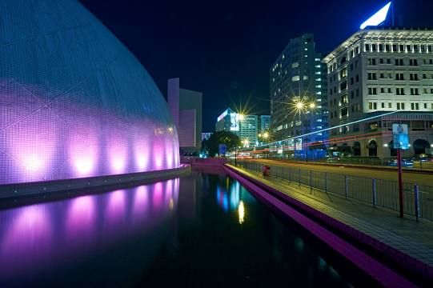
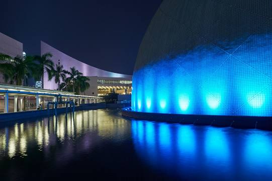

|  |  |
The Hong Kong Space Museum is an astronomy and space science museum located in Tsim Sha Tsui, Hong Kong. Opened on 8 October 1980,
it is managed by the Leisure and Cultural Services Department of the Hong Kong Government.[1] The building is notable for its
hemispherical shape, which contains a planetarium, the only one in Hong Kong. The main facilities of the museum are located in
a building next to the planetarium, showcasing information about the Solar System, cosmology, and spaceflight.
Accessible from Salisbury Road, it is adjacent to the Hong Kong Cultural Centre, the Hong Kong Museum of Art, and
the Tsim Sha Tsui Clock Tower. The Hong Kong Science Museum and the Hong Kong Museum of History are also located in Tsim Sha Tsui.
(Source:wikipedia)